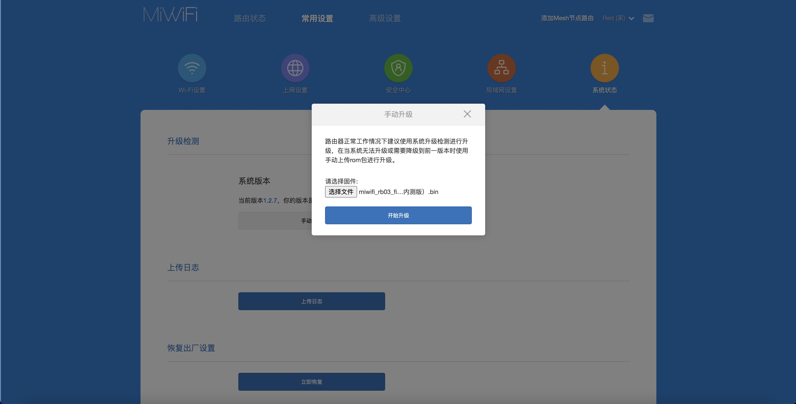
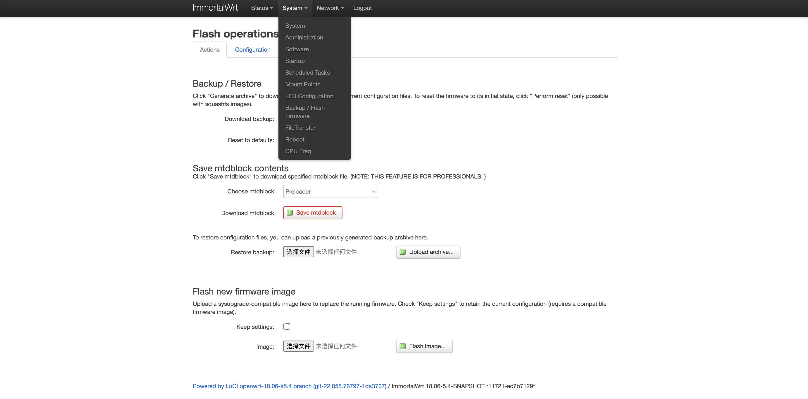
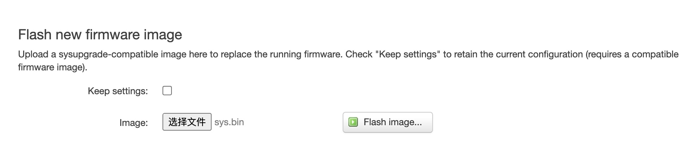
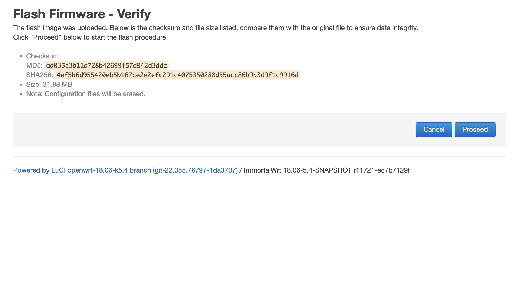
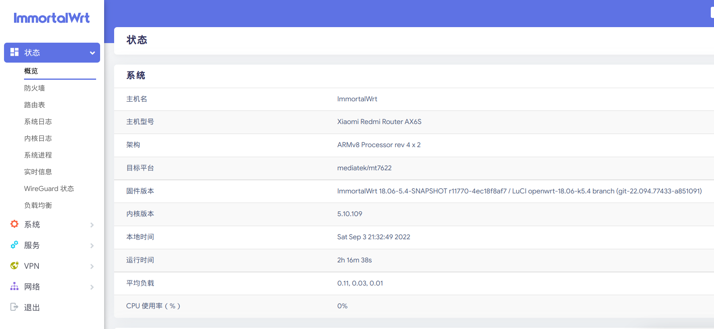
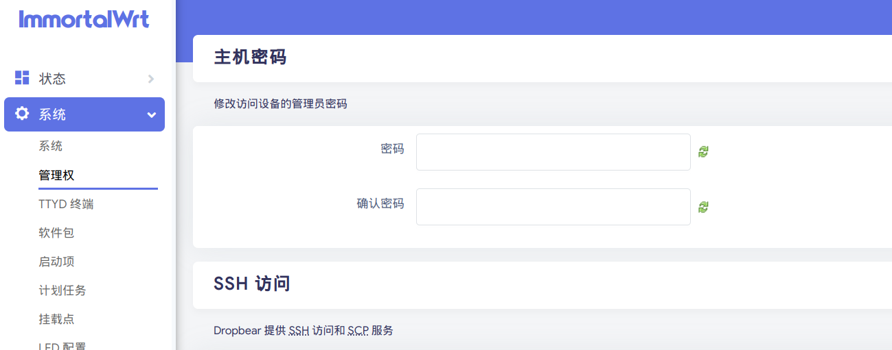
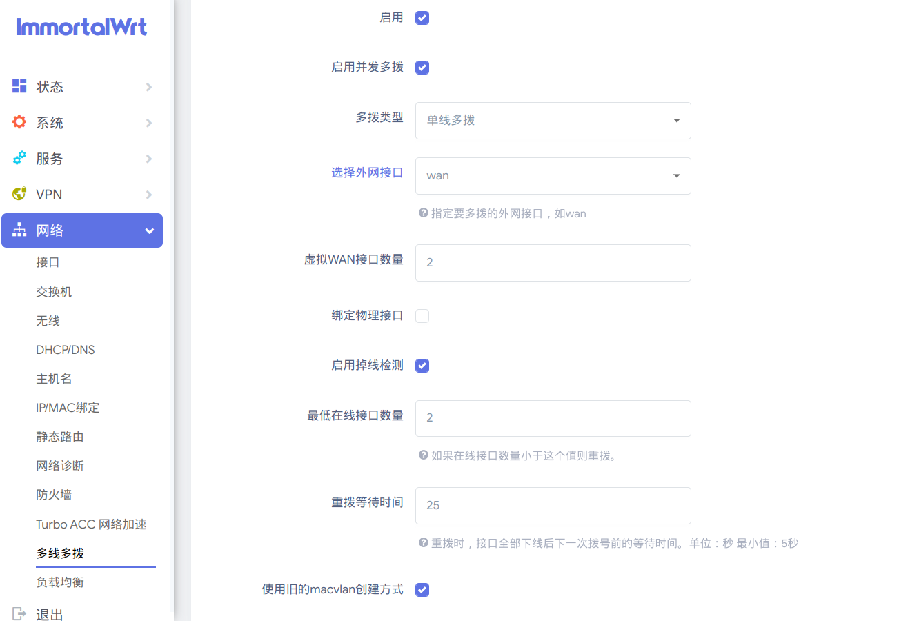
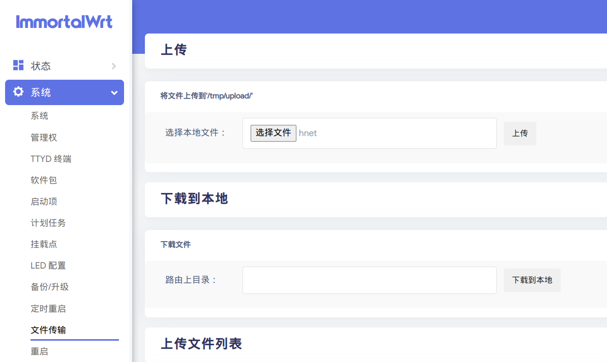
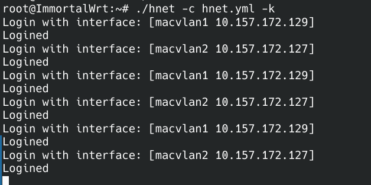

校园网优化指南
缘由
- 计算机人应该有一个好的网络环境，针对一些无法走系统代理的软件，可以在路由器端进行代理。例如Forge。
- 通过openwrt可以实现校园网账号多播从而达到网速叠加的效果，可以加快网页打开速度。
- openwrt具有丰富的插件来对网络环境进行优化和定制。
- SteamLink流式媒体传输需要较好的内网环境，需要WIFI6的支持才能流畅体验。
硬件环境
- Manjaro Linux （可使用其他操作系统）
- Redmi AX6S路由器
刷入openwrt
参考教程：
https://www.right.com.cn/forum/forum.php?mod=viewthread&tid=8187405&page=1&authorid=364126
刷入开发板固件，解锁telnet和ssh，然后刷入openwrt底包
首先路由器通电，连接路由器WIFI，按照说明书指示进行初始设置，进入小米路由器后台。然后使用开发版固件进行升级

等待路由器重启后telnet连接路由器
1 | telnet 192.168.31.1 |
用户名：root，密码：通过该网站进行计算 https://www.oxygen7.cn/miwifi/ 。SN码可在路由器身上找到。
接着需要让路由器连接上网。使用网线连接至校园网的路由器上，校园网是通过DHCP协议认证的，所以接上网线就能获取IP了。但是还需要进行校园网认证才能上网。对于我的学校是使用 Dr.COM 系统进行认证的。可以使用 curl 来进行认证。但是也可以直接连接路由器 WIFI 输入校园网认证的 IP 地址 进行认证。请注意，不能输入域名，因为此时无法访问 DNS 服务器进行域名解析。可以在别的已经连接校园网的设备上 ping 校园网认证主机查询。
如何检测是否已经连接上网？使用 curl www.baidu.com 验证即可。
接着刷入 openwrt 底包
1 | cd /tmp |
等待路由器重启即可
刷入过渡固件后会自动重启，Wi-Fi 名会变为 openwrt-5G。
- 默认后台：192.168.6.1
- 用户名：root
- 密码：password
这样就刷写成功 openwrt 了
刷入第三方固件
下载地址：https://sssddddff.lanzouv.com/icvUt09ygync

在路由器后台选择-System-Backup / Flash Firmware

不要勾选 Keep settings，然后 Image 选择文件选择 openwrt 固件，然后点击 Flash image。

最后选择 Proceed 即可。

openwrt 基本配置
修改系统密码和开启 ssh 登录
在 系统 > 管理权 菜单下可以修改系统密码

往下拉即可添加 SSH 秘钥，可以实现免密登录路由器，更加安全。
公钥位置在系统的 ~/.ssh/ 目录下，可以通过命令生成公钥，一般以 .pub 结尾，上传文件内的内容即可。
1 | 生成公钥 |
然后配置 ~/.ssh/config 这个 IdentityFile 为刚刚生成的公钥位置
1 | Host ax6s |
配置好了后就可以直接使用 ssh ax6s 来登录了
网络接口介绍
可以通过使用 ifconfig 命令来查看网络接口，下面介绍几个重要的接口
br-lan如果你的设备含有不少于1个的LAN接口，那这个设备在不同的接口之间可能有一个被称为交换(switch)的特殊连接。这个可以用来将 lan 口变成 wan口，后面的多线多播需要用到lo本地回路，即localhost127.0.0.1eth0即物理网卡rara0即两个无线网口eth0.1虚拟网卡 vlaneth0.2虚拟网卡
多播设置
多播分为单线多播和多线多播两种。单线多播是通过 mwan3 虚拟网卡实现获取多个 IP ，多线多播则是直接使用多个 WAN 接口获取多个 IP 。
但是这里可以使用该固件内置的插件来设置

如此设置后然后在保存&应用即可
接下来就要为每一个虚拟出来的 vwan 登录校园网。
笔者使用 go 语言写了一个小程序能够不间断的使用每一个 vwan 向校园网发起认证。但是只能支持我自己学校（HNUST）的认证协议，可以根据自己需求更改源代码然后交叉编译。
代码地址：https://www.github.com/notnotype/tiny_script
一共有两个文件
- hnet
- hnet.yml
一个配置文件，一个可以执行文件。下载下来后上传到 openwrt 里面

然后运行以下命令将上传上来的文件移动到 /root 目录，并给与权限
1 | cd /root |
然后运行它
1 | ./hnet -c hnet.yml -k |
这样他就会一直运行了。
可以使用 systemctl，screen 或者 nohop 等工具后台运行它。
运行效果：
